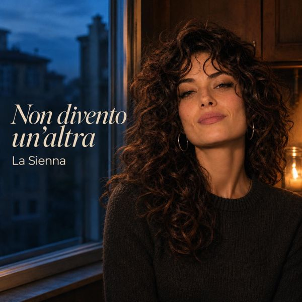

Discografia
Le mie canzoni, una alla volta. Qui trovi i testi interi e dove ascoltarle.
il diario di come provo a fare musica davvero
Le mie canzoni, una alla volta. Qui trovi i testi interi e dove ascoltarle.
Singolo 1

Hai lasciato una tazza
sul bordo del lavandino,
ci cresce dentro la sera
da quando non c'è più il vino.
Fuori cambiano i turni
le insegne della città.
Io cambio posto alle cose,
ma il vuoto sa dove andare.
E mi sorprendo a cantare
con la bocca piena di niente,
mentre il treno delle sette
porta via la solita gente.
Non divento un'altra,
anche se cambio colore.
Il vento mi spettina i giorni,
non riesce a spostarmi il cuore.
E lasciami perdere,
lasciami perdere bene.
Che certe cose si rompono
e fanno luce lo stesso.
Ho comprato una pianta
che non sa stare al sole.
La sposto vicino alla porta,
ci parlo senza parole.
Mia madre mi chiama domenica,
mi chiede se mangio abbastanza.
Le dico che va tutto bene,
poi rido da sola in cucina.
E ieri ho trovato un biglietto
nel libro che non ho finito.
Diceva soltanto «domani»,
senza spiegare il motivo.
Non divento un'altra.
Mi riconosci lo stesso?
Ho ancora le mani di allora,
ma tengo il mondo diverso.
E lasciami perdere,
lasciami perdere bene.
Che certe cose si rompono
e fanno luce lo stesso.
La tazza è ancora sul bordo.
Stavolta la lascio dov'è.
Non divento un'altra,
non so nemmeno se voglio.
C'è un sole sopra i palazzi
che passa attraverso il foglio.
E lasciami perdere,
lasciami perdere bene.
Che certe cose si rompono…
…e fanno luce lo stesso.
Crediti: LA SIENNA è un'artista virtuale. Testi e musica sono di persone reali, indicate in ogni brano; produzione Genesa Vision Srls.